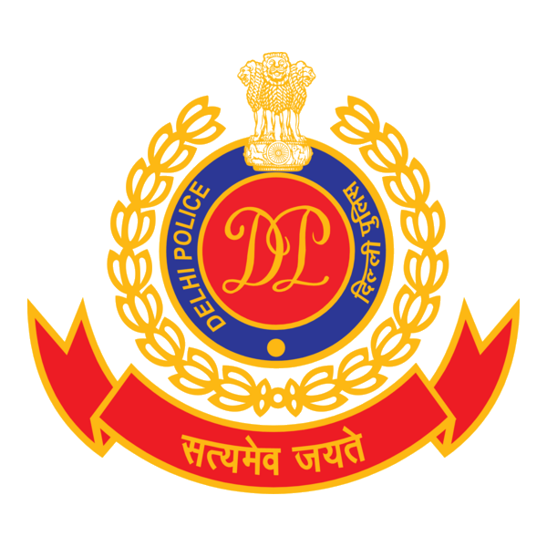

Windows Forensics Investigation
Investigated a compromised Windows system, recovered deleted evidence, and built a timeline using Autopsy, FTK Imager, and Windows Event Viewer.
Aspiring Cybersecurity and Digital Forensics professional pursuing B.Tech in Computer Science. I work across Windows forensics, networking, and security fundamentals with hands-on practice in Autopsy, FTK Imager, and event timeline analysis.
I am seeking an internship with law enforcement or cybercrime units where I can apply investigative thinking, careful documentation, and analytical skills in real-world cases.
casefile --candidate Vansh_Saini
status: internship_ready
focus: digital_forensics
signal: curious, disciplined, hands-on
toolkit: Autopsy, FTK, Kali, Nmap
mission: secure evidence, find truthProjects focused on evidence recovery, authentication security, tamper detection, and network analysis.
Investigated a compromised Windows system, recovered deleted evidence, and built a timeline using Autopsy, FTK Imager, and Windows Event Viewer.
Built a web application with password hashing and server-side validation to reduce SQL Injection and XSS risk.
Used hashing to detect invoice tampering and demonstrate integrity checks for fraud-resistant record validation.
Explored real-time network traffic visibility during call sessions as a networking exercise focused on analysis and responsible lab practice.
A balanced skill map covering web development, operating systems, forensics tooling, and security fundamentals.
Certifications from cybersecurity, IT support, networking, front-end, and event participation are collected into one clean interactive gallery.

IFSO SPL. Cell Delhi Police
Supporting cyber forensic learning in a law-enforcement environment, focused on digital evidence handling, investigation workflows, and practical exposure to cybercrime response.
Computer science education paired with focused cybersecurity and forensic training.
B.Tech in Computer Science, New Delhi
Expert in Cyber Security Program under Akhil Bhartiya Cyber Suraksha Sangathan.
Class XII, CBSE PCM, New Delhi
If the role involves evidence, networks, incident timelines, or learning in the field, I would like to talk.